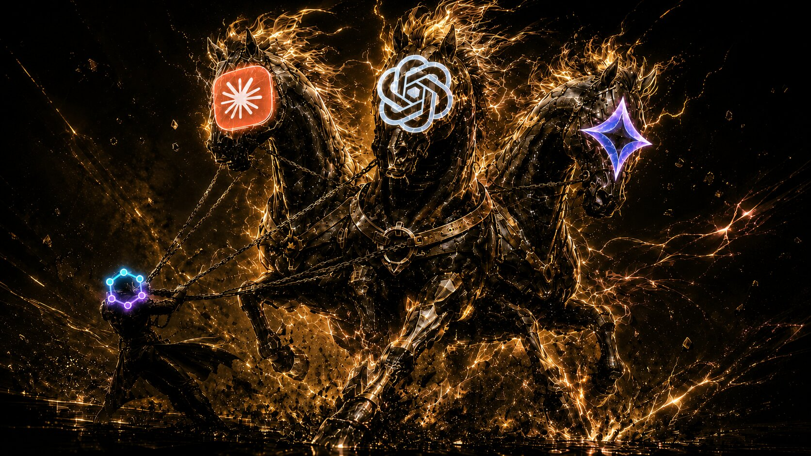

State-oriented task graph kernel for the agentic era
Loop engineering substrate. Context engineering infrastructure. State is derived, not set. The task layer that every agent framework can call.

Installation
No cloud. No database. No external services. Just a local CLI that runs anywhere Node.js runs.
1 — Install
2 — Initialize
3 — Create a task
4 — Visualize
Capabilities
Not another todo list. Octie is the task substrate that bridges human intent and agent execution — where state is derived, not set.
01
Design the system that prompts your agents — not the prompts themselves. Octie provides discovery, verification, memory, and guardrails for agent loops.
02
Structured, typed, dependency-aware context for agents. Not just text — tasks, criteria, deliverables, blockers. The context that lives between steps.
03
CLI-first, file-based, local-first. Designed for any shell agent — Claude Code, Codex, Gemini CLI, or any terminal-based AI. No cloud dependency.
04
Status is derived, not set. Five states compute from item completion and blockers. State-oriented programming — the system recalculates itself, agents cannot drift out of sync.
05
Tasks, criteria, deliverables, approval gates, audit trails. The full ADLC — from planning to implementation to review — tracked in a single graph.
06
Markdown for AI consumption. JSON for visualization. The same task graph serves both agent loops and human Kanban boards.
State-Oriented
Status is never set manually. It derives from item completion, blockers, and approval gates. The system recalculates itself.
Add JWT auth middleware to protect API routes, verify tokens on each request.
Create POST /register with input validation, password hashing, and email verification.
Write migration scripts for new user profile fields. Include rollback scripts.
Simple GET /health returning service status, DB connectivity, and uptime.
Set up GitHub Actions for automated testing and deployment. Blocked pending IAM role.
State-Oriented Design
Two complementary mechanisms keep the task graph in sync: automatic state broadcast through the graph, and a single human approval gate.
Status is never set manually. It derives from item completion and blockers, then propagates through the graph via BFS. When a parent completes, children unblock automatically.
The only manual transition: in_review → completed. This is the human gate — the one moment where intent meets execution. Approval unblocks all dependent tasks.
Agent Skills
Six skills that guide any shell agent through the complete Octie workflow — from installation to refinement. Works with Claude Code, Codex, Gemini CLI, or any terminal-based AI.
Install the Octie CLI globally, verify the installation, initialize a project, and guide the user through basic usage.
/octie-installUse web search tools, C7 MCP, and Tavily to research technology stack, architecture patterns, edge cases, and best practices.
/octie-researchCreate well-structured, atomic Octie tasks with proper dependencies, success criteria, and deliverables. Validate the graph.
/octie-planExecute a development round — pick up tasks, implement features, verify criteria, update progress, create audit trails, and commit.
/octie-devAnalyze bug reports, investigate root cause, present pre-modify workflow, and create properly structured fix tasks.
/octie-fixRearrange dependencies, merge small tasks, split oversized tasks, remove unnecessary blockers, and validate graph integrity.
/octie-refineWorkflow
The agentic loop. Tasks are discovered, executed, verified, and approved — then the next task is ready. The loop drives itself.
Break complex goals into atomic tasks with quantitative success criteria and concrete deliverables. Octie validates they're specific, measurable, and executable.
octie create --title "..." --success-criterion "..." --deliverable "..."Agents discover ready tasks, implement changes, and mark criteria complete. Status auto-derives from item completion. No manual status updates — the system knows.
octie list --status ready --format mdWhen all items are complete, approve the task. This is the human gate — the one moment where intent meets execution. Approval unblocks the next work.
octie approve <id>Approved tasks unblock dependents. New tasks become ready. The agent loop discovers them, executes, and the cycle repeats — until the project is done.
octie list --graphTask Graph
Tasks form a directed acyclic graph. Status propagates through dependencies. When a parent completes, children unblock automatically.
For AI Agents
Agents discover ready work, execute, and mark progress. Status derives automatically. The loop continues until the project is done.
Loop engineering substrate. Context engineering infrastructure.
State is derived, not set. Local-first. CLI-native. Agent-ready.
Questions, feedback, or collaboration ideas?
I'd love to hear from you.